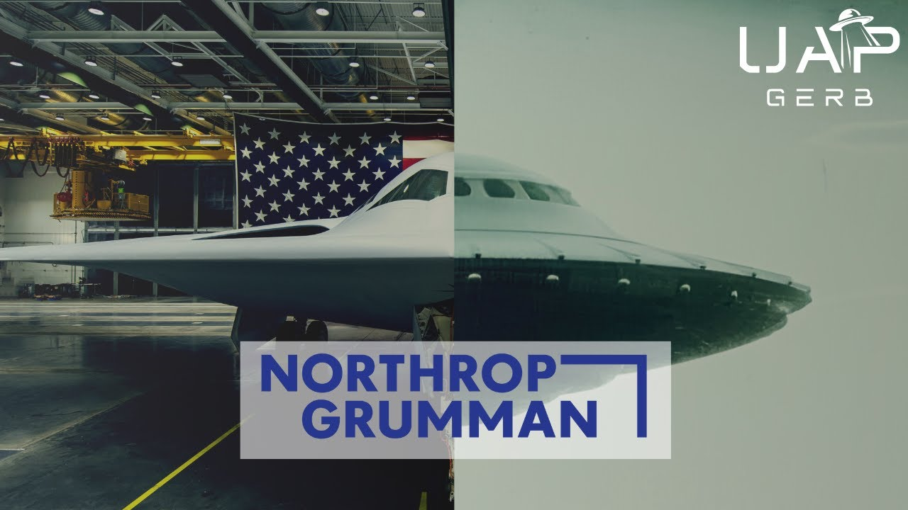

UFO Legacy Programs - Northrop Grumman

Published: 2025-01-27 · Duration: 1:04:52 · Channel: UAP Gerb
Description
A deep dive into the Northrop Grumman Corporation and their alleged involvement in UAP legacy reverse engineering and crash retrieval programs. Alongside high-profile defense contractors such as Lockheed Martin and SAIC, Northrop has historically been implicated as one of THE premier US defense contractors possessing non-human vehicles and technology.
This project will analyze numerous acquisitions conducted by Northrop over the decades, such as TRW, Teledyne Ryan, BDM, etc, study alleged Northrop UAP program locations, and dissect whistleblower testimony surrounding the corporation and their UAP operations.
Does Northrop operate TUO (technologies of unknown origin) material exploitation and UFO crash retrieval teams? Let's try and find out....
0:00 Intro 05:21 Northrop, TRW, BDM & Acquisitions 22:41 Northrop Legacy Operations 34:48 Northrop Whistleblowers 55:45 Conclusion
John Northrop (AI Enhanced): https://www.youtube.com/watch?v=NmSqvZUryCQ
1968 Northrop Corp NORAIR publishes on electro aerodynamics: https://arc.aiaa.org/doi/abs/10.2514/6.1968-24
Hunt for Zero Point: https://archive.org/details/huntforzeropoint0000cook/page/134/mode/1up
NATDC: https://www.secretprojects.co.uk/threads/northrop-post-atf-concepts.1748/
Northrop Purchase of TRW: https://www.washingtontechnology.com/2002/12/northrop-grumman-creates-two-new-sectors-out-of-trw-names-leaders/319699/
Will Miller BDM: https://books.google.com/books?id=WwYRW5zQnQcC&pg=PA300&lpg=PA300&dq=Gersten+%20Will+Miller+email&source=bl&ots=RhXS9%206lO2&sig=ACfU3U070ck54jf9WbfnP5hkFNsR0Et%20hkA&hl=en&sa=X&ved=2ahUKEwi2xsH1qMn6AhVvomoFHd19D74Q6AF6BAgmEAM#v=onepage&q=Gersten%20Will%20Miller%20email&f=false
1985 BDM ATP: https://ufos-scientificresearch.blogspot.com/2019/06/the-advanced-theoretical-physics.html
RCS facilities: https://www.otherhand.org/home-page/area-51-and-other-strange-places/bluefire-main/bluefire/radar-ranges-of-the-mojave/what-is-an-rcs-facility
Col Steve Wilson: - https://www.drboylan.com/colww3a.html - https://www.drboylan.com/swilson2.html - https://www.phils.au/colonel-steve-wilson/ - https://www.drboylan.com/colbirb2.html - https://www.abovetopsecret.com/forum/thread663499/pg1 - Kevin Randle Skepticism: https://kevinrandle.blogspot.com/2006/11/colonel-steve-wilson.html
Steve Wilson Pounce - https://www.cufon.org/cufon/robert.htm - https://www.reaganlibrary.gov/public/2021-06/40-654-209237722-045- 010-2021.pdf
X Raider: - https://www.lockheedmartin.com/en-us/products/fara-raider-x.html - https://x.com/Sikorsky/status/1199086754860609541?lang=ar-x-fm
SDI: https://www.reaganfoundation.org/programs-events/events-calendar/president-ronald-reagans-strategic-defense-initiative/#:~:text=%E2%80%9CTrey%E2%80%9D%20Obering%20III%2C%20former,d'oeuvres%20will%20be%20served
Teledyne Ryan Links: - SDI: https://www.jhuapl.edu/Content/techdigest/pdf/V13-N01/13-01-Coughlin.pdf - https://en.wikipedia.org/wiki/Ryan_Aeronautical
TRW: - https://www.latimes.com/archives/la-xpm-A1989-04-11-me-1656-story.html - https://www.nytimes.com/1986/01/02/business/star-wars-tests-trw-engineers.html
NG C4SIR: https://www.northropgrumman.com/what-we-do/land/our-c4isr-heritage - https://www.northropgrumman.com/c4isr - https://www.saic.com/features/Small-Arms-Experts-Advance-Weapons-Technology-for-U-S-Military
Arnold House Testimony: https://www.youtube.com/watch?v=JW6cJuKDUsU
Bob Oeschler: - https://archive.org/details/aliencontacttops00good (p218, p222)
Northrop Sued by DOD: https://www.washingtonpost.com/archive/business/2003/06/10/northrop-to-pay-111-million-to-settle-suit/396a026f-b32f-45dd-b2eb-a08236f83d19/
Black Budget of the US: - https://www.jstor.org/stable/48504790 - https://missingmoney.solari.com/dod-and-hud-missing-money-supporting-documentation/
NPR failed Audits: - https://www.npr.org/2021/05/19/997961646/the-pentagon-has-never-passed-an-audit-some-senators-want-to-change-that - https://www.reuters.com/article/world/pentagon-fails-its-first-ever-audit-official-says-idUSKCN1NK2QQ/
Pentagon 21 trillion audit: https://msutoday.msu.edu/news/2017/msu-scholars-find-21-trillion-in-unauthorized-government-spending-defense-department-to-conduct
THIS VIDEO IS FOR EDUCATIONAL PURPOSE ONLY! FAIR USE PRINCIPLES UNDER SECTION 107 OF THE COPYRIGHT ACT.
ufo #uap #uapnukes #uapdisclosure #ufology #ufonews #ufosightings #uapsightings #ufofootage #uapfootage #hynek #condoncomittee #Jallenhynek #projectsign #projectgrudge #projectbluebook #bluebook #ufocongress #SOL #solfoundation #karlnell #Battelle #UFOreverseengineering #lockheed #skunkworks #lockheedmartin #rosscoulthart #fastwalker #blackvault #slowwalker #kingman #ufocrash #nickredfern #Grusch #michaelherrera #USO #TimothyGallaudet #mystery #mysteries #unexplained #extraterrestrial #space #technology #greer #kecksburg #kecksburgUFO #nasa #edwards #usaf #elizondo #arv #McCandlish #immaculateconstellation #rosscoulthart #edgarfouche #tr3b #arv
Transcript
Show transcript
The propulsion of these UFOs is unique, their ability to hover, their ability to accelerate very rapidly, their ability to move at very high speeds, very much higher than anything that we have achieved, even with our supersonic aircraft. All of these things, and particularly interestingly, without sonic booms and the things that we don't like about our supersonic aircraft, all of these things indicate a type of propulsion, which is unique. Different than anything we know anything about, and which would be a tremendous value if we could develop it and use it. That's the reason I feel with a number of others who have studied it, that it is a subject which deserves the highest type of scientific study and at an early date. The advantages to be gained are perfectly enormous. And how long do you feel it will be before we are flying in UFOs? Well, this probably is a $64 question without a question without. I think it depends, a great deal, on how rapidly we take them seriously and how soon we really set up a scientific study team to work on the subject. This is where we push the laws of physics. You see, the technology we make is what makes the impossible possible. And it doesn't stop there. So far on this channel, we have devoted entire investigations towards Battelle Memorial Institute and their possible work on shape memory alloys recovered from the 1947 Roswell, New Mexico crash, as well as Lockheed Martin and their intimate decades long involvement in UFO legacy programs. After all, high profile US defense contractors have for decades been accused of actively engaging in material exploitation and reverse engineering programs, focused on technologies of unknown origin in conjunction with various factions within US government intelligence and military. Overall, you know, the government has been the custodian of a lot of this, right? And they'll hand recede it out to a clear defense contractor to do some analysis, which I find highly unethical. You have basically a sole source arrangement and you allow certain private corporate elements to look at this, develop a potential insight and then sell it back to the government for profit. And I think that's totally unethical. Lockheed Martin and others do quite a bit of work, both in our atmosphere, in space, and even underwater. There are certain efforts to... It's a tough question you ask. I left the Air Force and was sent out to California at that time to begin establishing my cover basis as an independent contractor so that I can serve what was coming down the line next for me. And that is the path which led to the UAP subject. These claims are not without merit as since the inception of the US military industrial complex, private defense industry has worked in tandem with military and intelligence to bolster US military might protected by waived, unacknowledged special access programs. I have directly accused Lockheed Martin, Patel, Boeing, SAIC, and many other private institutions and semi-private institutions, such as UARCs and FFRDCs possessing, experimenting with and possibly successfully harnessing non-human technologies. Today, we focus our sights towards the US Aerospace and Defense Colossus and father of the B-2 stealth bomber, Northrop Grumman, often overshadowed by the infamy of Lockheed and their involvement in the 2008 failed attempt to divest recovered NHI materials to the OSAP program. Northrop Grumman has largely successfully distanced itself from the spotlight of defense contractors engaging with UAP legacy programs. In fact, focused discussion on the alien reproduction vehicle, Fluxliner, as relayed by Brad Sorensen and the TR-3B reverse engineered triangle discussed by USAF Master Sergeant Edgar Fouchet seemed to primarily focus on Lockheed. These testimonies highlight the defense contractor successfully reverse engineering non-human craft to operate under human control. But throughout such disclosures, Lockheed isn't the sole contractor accused of such highly classified efforts. Hardly mentioned, but always alongside in the shadows is Northrop Grumman. Could Northrop Grumman truly be involved in material exploitation of technologies of unknown origin, TUOs? Just how far does their involvement with UFO studies go? Join me today as we peer into the shadows to find out. Hey guys, it's UAP Gerb and thank you so much for joining me as we touch back to UFOs in the private sector. This time to Northrop Grumman. The contractor I believe alongside Lockheed is the Paramount Aerospace Corporation entrenched in UFO legacy programs. From whistleblower testimony to analysis of Northrop's numerous acquisitions over the decades, let's thoroughly dive into the legendary Northrop Grumman and their involvement in UFO legacy programs. Let's start by analyzing the history of Northrop and its many, many, many acquisitions over the decades. Northrop Grumman is an American aerospace and defense company employing over 95,000 employees with an annual revenue of $30 billion. The industry giant has achieved extraordinary engineering feat such as aiding in the development of the James Webb Space Telescope and directly creating the B-2 Spirit Bomber and B-21 Raider, the world's only known stealth bombers. Northrop Grumman operates in four major divisions, aeronautics, defense, space and mission systems, outside of military aircraft, space systems and weapon development. Northrop also engages in cyber security, information technology and radar and sensor systems. Briefly, I do take an extreme interest in Northrop's C-4 ISR, Command Control, Communications, Computers, Intelligence, Surveillance and Reconnaissance, which falls under Northrop's land-based critical technology services, sustainment and modernization. C-4 ISR is essentially the military's nervous system consisting of various electronic equipment and technologies serving to aid the modern warfighter through data and intelligence. I am currently working on a thesis that select contractor C-4 ISR programs engage in deep-six waved USAPs for crash retrieval and ARV testing, data and analysis, let me explain. Northrop was one of the premier contractors operating C-4 ISR for the Strategic Defense Initiative instituted under Reagan in 1983. Northrop created the first laser radar used in space for SDI. I have discussed numerous times lines of research which state SDI focused on Soviet ICBM nuclear defense, secretly studied and employed offensive capabilities against UAP and siphoned program funds to UAP legacy programs such as the DARS, Defense Advanced Research Center, proposed to exist in an ARPA document. SAIC, Science Applications International Corporation, frequently secures massive hundreds of million dollar contracts for C-4 ISR at the Naval Surface Warfare Center Crane. I have published extensive research, SAIC runs an off-world technologies division to house recovered NHI artifacts at the Crane Naval location. When discussing witness Ed in the existence of a joint ARV testing program out of Edwards Air Force Base in Area 51 under the Edwards 412 test group, I made reference to a Lockheed Martin ISR case study. In this study, Lockheed was tasked with updating the system used by USAF Warfare Center for Intelligence Collection and Data Processing. Lockheed reconfigured a two phase security classification system used by the National Geospatial Intelligence Agency. Yes, the same agency Grush was a part of when liaison to the UAP task force and the same agency recently mentioned by respected journalist Chris Sharp as participating in undersea UAP crash retrievals. The system was implemented to the combined air and space operation center at Nellis Air Force Base, which is tasked with processing information for exploitation of time sensitive targets. At the time I speculated, although this Lockheed project arose from challenges in the Nellis Red Flag Advanced Aerial Combat Training Exercise, could such systems be used to monitor UAP and UAP crash retrievals? Although C4 ISR is common and the nervous system of the armed forces, I do think analyzing Defense Corporation's C4 ISR contracts and projects with USAF Army and Navy can lead to knocking on the door of UAP program operations. And after that long discussion, finally back to the history of Northrop Grumman. NG arose from the merging of two military aircraft companies, the Grumman Aircraft Engineering Company and the Northrop Company in 1994. Throughout its storied history, Northrop made a few very key acquisitions. We will continue to reference over and over again throughout this project. One such acquisition occurred in 1999 with procurement of Teledyne Ryan, developer of surveillance systems at unmanned aircraft. In 2002, Northrop Grumman acquired TRW Inc, a corporation involved in aerospace, electronics and the automotive industries. Outside of computers, systems engineering, integrated circuits, TRW was a true trailblazer in spacecraft construction, building pioneer one, 10 and numerous space-based observatories. The defense giant considered TRW, its quote unquote capstone acquisition signaling the end to Northrop Grumman's aggressive purchasing streak. Why was TRW considered the crown jewel of Northrop's purchases? While there is evidence to suggest this was due to TRW operating a portfolio of UAP legacy programs upon purchase. Lengthy investigation must be done to discover the UFO program portfolio Northrop may have inherited from TRW. TRW has long been associated with a rumored crash retrieval program run out of Wright-Patterson Air Force Base, a topic even touched on by Lou Elizondo in his book Eminent. And let's mention that in June of 1960, TRW spawned the Aerospace Corporation. The Aerospace Corporation has additionally been implicated in UFO legacy programs and served as a place for employment for OSAP physicist and member of the Wilson Davis meeting Dr. Eric Davis. I would additionally like to draw attention to the year the Aerospace Corporation was founded in 1960 and relate this founding to the testimony of Lieutenant Colonel Philip J. Corso. Corso stated 1958 to 1962 oversaw the golden age of U.S. Army R&D where Army assets, universities, laboratories, and private industry were leveraged to reverse engineer non-human technology to bolster the U.S. war machine. Analyzing Army primers from around this time highlight a period of massive innovation in Army research and development. The MITRE Corporation was born during this time in 1959 with lines of research to suggest its formation was to engage in such research and development projects alongside Bell Labs, Sperry Rand, et cetera. The Aerospace Corporation founded just one year post-MITRE, maybe one additional corporation spawned from TRW for U.S. Army legacy operations. And worthy to note, both MITRE and the Aerospace Corporation are both known as FFRDCs, federally funded research and development centers. Present day, the Aerospace Corporation manages the Aerospace FFRDC for the Department of Defense and Air Force to support, quote, national security space programs, end quote. We are truly the only space enterprise that exists in the United States. And I mean this at the agency level in the government, the FFRDCs in private industry. There is no other organization that does national security space, civil and commercial, and international as well, that ties these all together with both the breadth and the depth that we bring to this problem. I have spoken at length about FFRDCs, semi-private institutions that play a crucial hand in UAP legacy programs. I recommend any of my previous four investigations to hear more on the subject. It is intriguing, Dr. Eric Davis of the Wilson Davis Memo, all but admitted the Aerospace Corporation built from TRW is actively involved in UAP legacy programs. And that up to that point, TRW had been a primary contractor in such UFO programs. So all this talk about private contractors, you know, the big Lockheed Martin, what about federally funded research and development centers, such as MITRE, RAND, TRIAD, Oak Ridge, and UARC, so university affiliated research centers, where do they fall into this? Only one, and I won't name it. It started out as a contractor in 1960, starting not too long after it was born. It was actually a spinoff of TRW. So TRW was the principal investigator for the first roughly what, almost 30, yeah, practically, well, 29 years. Before we keep discussing TRW, let's highlight a former U.S. Premier Electronics Manufacturer implicated in TUO exploitation by Lieutenant Colonel Corsa with possible ties to MITRE and the Aerospace Corporation, this being the company I just mentioned above, the Sparey RAND Corporation. In his manuscript, Corsa would reference the personal memoirs of Lieutenant General Arthur Trudeau, Chief of U.S. Army R&D and Founder of the Army's Foreign Technology Division, and how Trudeau would engage in frequent meetings with Sparey RAND's board, including legendary General Douglas MacArthur. Sparey RAND went defunct in 1986 and its former divisions became part of Lockheed Martin, Raytheon, Honeywell, and you guessed it, Northrop Grumman, all companies implicated in UFO legacy programs. But let's get back to TRW. TRW features some familiar faces of this channel many will recognize. Remember if you will, Dr. Eric Walker, the scientist named by physicist Dr. Robert Sarbacher as participating in UFO crash retrieval meetings alongside Vannefar Bush in the 1950s. Walker started Penn State's University Affiliated Research Center, self-admitted he knew about the Majestic 12 and was present at the 1965 Kecksburg, Pennsylvania UFO crash. I have always talked about how Walker is one of the most crucial names in UFO crash retrieval and reverse engineering programs in the 1950s and 1960s. Much intrigues me about Walker, including his position as former chairman of TRW. TRW has also been discussed at length by respected researchers such as Richard Dolan as the primary contractor running a crash retrieval program under the project named Zodiac. Project Zodiac, an MJ-12-like entity, is not our subject today. However, we may discuss it soon as the story of Zodiac by pseudonym Sedge Masters is utterly captivating. And with TRW, we may just have a paper trail to connect them and Northrop to legacy operations. In 2004, former assistant secretary of housing and urban development, Catherine Austin Fitz, wrote a paper called The Black Budget of the United States. This paper stated a large portion of the nation's wealth had ongoing leave and illegally diverted into secret, unaccountable channels to support clandestine military research and development. Some to a majority of which had been suggested to be UAP-related. While at the HUD department, Fitz came across information various high-profile defense contractors accounting systems were responsible for scrubbing and obfuscating the direction of these funds. Although a 1990 federal law mandated every single U.S. government agency be audited, the Pentagon never publicly faced a comprehensive audit until one was launched in December of 2017. And not to mention since, the Pentagon has never passed an audit. And this 2017 audit may have happened solely due to another Catherine Austin Fitz University paper detailing $21 trillion in unauthorized spending in the DOD and Department of Housing and Urban Development from 1998 to 2015. In the Wilson Davis memo, which I have talked about so many times, Admiral Thomas Wilson relates to Dr. Eric Davis, the watch committee, the gatekeepers of the UAP legacy program portfolio, told Wilson they are organized after an audit in the 1990s almost blew their cover. What this means is essentially a failed audit led to UAP programs being reorganized under the special access program oversight committee, senior review group. Here is where we circle back. In 2003, Northrop Grumman settled a lawsuit from the U.S. government for $111 million, almost $200 million today. This settlement was due to Northrop subsidiary TRW, overcharging for government work done on space projects in the early 1990s. This suggests TRW's inflated space project contracts were implicated and uncovered in the failed audit mentioned in the Wilson Davis memo that took place in the 1990s. Timelines indeed match up as the beginning roots of this lawsuit can be traced back to 1994. TRW's likely involvement with UAP legacy waived unacknowledged special access programs appeared as contract overcharging to the wider DOD auditing officials, leading to the lawsuit against TRW settled by Northrop, utterly fascinating. If this hypothesis is accurate, Northrop settled the suit and reorganized their UAP portfolio under the SAPOX Senior Review Group program reorganization that was relayed to Wilson. To make Northrop's purchase of TRW even more interesting, shortly before Northrop bought TRW in 2002, TRW had purchased BDM, Braddock Dunn and McDonald in 1997. BDM was a technical services firm that headquartered at Fort Bliss, Texas, White Sands Missile Range, New Mexico, and Holloman Air Force Base, New Mexico. BDM specialized in and worked primarily with missile guidance, application optics, electronic instrumentation, and radiation physics. BDM was also founded in 1959, around the same time as MITRE and the Aerospace Corporation. BDM was mentioned specifically by Commander Will Miller of the Wilson Davis Memo in the year 2000. The former U.S. Navy commander stated numerous government individuals such as Defense Intelligence Agency directors who in this case would have been Vice Admiral Thomas Wilson were isolated from UAP knowledge. The quote-unquote keepers of the secrets resided in DOD middle management and civilian contractors like Boeing, Lockheed, and BDM. To learn more about Miller and why his words carry weight, I highly recommend watching my video on the Wilson Davis Memo. Sure, it's my first video and it's very amateurish, but there's still some good information there. BDM could warrant its own video, but for now, I leave you with this. Just like FFRDCs, I have talked ad nauseam of Major General Albert Stubblebine and how his department, U.S. Army INSCOM and their previous Special Forces Unit, the Intelligence Support Activity, have been historically involved with UAP crash retrieval. In 1984, Stubblebine was replaced as head of INSCOM and went on to serve as vice president for BDM. The following year in 1985, BDM would host an advanced theoretical physics conference to discuss UFO reverse engineering opportunities. And actually, let's not stop there with BDM. In 1989, NASA mission specialist Bob Eschler was introduced to retired rear admiral Sumner Shapiro from Bobby Ray Inman. Inman was then board member of SAIC and Wackenhut and former NSA director and CIA deputy director. I have reason to believe Inman engaged with UAP programs in each of these four positions, but that is not our topic for today. Shapiro told Eschler factions within the U.S. possess extraterrestrial vehicles and that he had even studied one at close quarters. According to Shapiro, teams would take apart craft, pack them up and ship them across the country to different locations. These craft featured unique interlocking components that had to be dissembled in an exact sequence to be put back together. Rear admiral Shapiro was not only former director of naval intelligence, but also BDM international board member at the time, 1989. To this day, Northrop Grumman maintains a major corporate presence in Tyson Corner near the former BDM headquarters. All of this commentary on TRW, Teledyne Ryan, which we will get to shortly in BDM, served to highlight how Northrop Grumman and its many acquisitions interweave intimately with numerous cases we have covered on this channel. If the claims of Philip J. Corso are indeed true, Northrop's modern day legacy program operations can likely trace its roots back to the US Army's golden age of research and development in 1958 to 1962. This would also mean many of Northrop Corporation and Northrop Grumman's acquisitions were to purchase companies that had active, ongoing UFO legacy programs. This sort of context is crucial to establish before we explore whistleblower claims of Northrop's operations in these programs. And last thing before we continue, many individuals think of Lockheed Skunkworks Division when they picture UFO reverse engineering and material exploitation programs in the private sector. Well, in 1992, Northrop created its own quote unquote answer to Skunkworks. Northrop created the NATDC, Northrop Advanced Technology and Design Center to focus on the company's core key defense programs. While we have already discussed many of NG's acquisitions and their ties to UFO legacy programs from the 1960s to 1990s, let's back up and trace mentions and claims surrounding specifically the Northrop Corporation and later Northrop Grumman. I often think back to the words of US Army Colonel and advisor to US Army Futures Command, Carl Nell, who once stated, Non-human intelligence exists. Non-human intelligence has been interacting with humanity. This interaction is not new and it's been ongoing. And there are unelected people in the government that are aware of that. And so, Carl, that is quite a bold statement. I'm wondering and I'm curious, how confident are you that that is true? There's zero doubt. Nell has served as an outspoken advocate for David Grush and the existence of technologies of unknown origin. One has to wonder if this absence of doubt arose from Nell's position as Deputy CTO and Director of Systems Engineering and Integration for 13 years on Northrop Grumman. After all, while serving as Northrop's Deputy CTO, Nell was additionally serving as Command Representative to US CENTCOM for Army Foreign Service, US CENTCOM for Army Foreign Material Program. Northrop's earliest contributions to legacy programs may trace back to 1968. MS Can and GM Andrew of Northrop Northair published a paper on the electro aerodynamics in supersonic flow, suggesting Northrop was researching methods to reduce drag of an aircraft by creating an electrostatic field around the craft. This may remind some of T. Townsend-Brown and electro-gravidics. In Nick Cook's excellent book, The Hunt for Zero Point, one Dan Marcus is mentioned, a pseudonym for a source in the British aerospace industry. Marcus relayed to Cook that in 2002, the Pentagon pulled the specific paper and, quote, made it disappear, end quote. Marcus would suggest the B-2 Spirit Bomber applied these concepts to employ an electrostatic field around the aircraft to reduce drag. In fact, some UFO researchers such as Michael Schrap and Dr. Richard Boylan take this a step further, suggesting the B-2 employs reverse engineered possibly electro-gravidic technology, leading to the massive cost of the systems. The question is, and Mark talked about this before, is there more going on to the B-2 than meets the eye? Aviation Week Space Technology, March 9, 1992, had a very interesting article from people who worked at Northrop who were very upset that the technology associated with the B-2 program was not being trickled down to the public industry. They talk about how the B-2 electrically charges the leading edge of the wing to reduce the radar cross signature. That's what you see in this diagram right here. And then negatively charges the exhaust gases to reduce the infrared signature. This is the same type of electro-gravidic technology that T-Towns and Brown had originally proposed in the 1930s. So this technology might date back a lot earlier than we originally thought. The first true mention of Northrop engaging with NHI technology comes from the work of UFO researcher William Hamilton. Hamilton's book, Cosmic Top Secret, is in my opinion the most underappreciated book in all of ufology. It is a truly excellent piece, decades ahead of its time. For example, the 1992 book makes the first recorded mention of the term ARV and discussion of the Fluxliner, which wouldn't rise to fame until Stephen Greer's 2001 disclosure project event. Mind you, Hamilton did misquote the ARV acronym stating Alien Replicated Vehicle instead of Alien Reproduction Vehicle. However, my research has shown Hamilton spoke to Bill Scott of Aviation Week in Space Technology to discuss the Brad Sorenson Fluxliner testimony in the early 90s. The next time someone tries to say Stephen Greer coined the term ARV, send them this passage. And Hamilton actually told Greer about the 1988 Norton Air Force Base Show Fluxliner incident and actually passed along both primary witness Sorenson and aerospace illustrator McCandlish to Greer. Hamilton was one of the first to draw serious research to the Antelope Valley, California, near Edwards Air Force Base. Hamilton drew attention to Lockheed's Gunkworks, Rockwell, McDonnell Douglas, and Northrop, all having plants in Palmdale, California. The nation's then chief center of aerospace technology in the middle of these complexes sat Air Force Plant 42, a name many associate with UAP programs. The author of Cosmic Top Secret does not draw attention to the Northrop facility near Palmdale, but instead to a secret underground installation north in the Tujachepe Mountains. Hamilton accuses the Northrop-Tahan Ranch Radar Cross-Section Facility and accompanying underground installation as a UAP program facility. Very little is known about this facility and the underground extension, but let's see what we can dig up. This site officially serves as a radar cross-section range. Quickly, what exactly is a radar cross-section facility? To summarize, these facilities utilize high-frequency radio waves to test aircraft radar signatures. The sites utilize large runways and pylons raised from underground on concrete diamonds as mounting pads to blast craft and materials with radar. Many RCS facilities saw construction during the Cold War. This led the majority of installations being built underground to hide RCS pylons, equipment, models, and technologies away from Soviet spy satellites. In Cosmic Top Secret, William Hamilton discussed numerous statements recounted to him, such as a 1988 sighting of a giant boomerang over the Northrop facility and a flying saucer seen taking off from a building on the property. The Northrop RCS facility has recorded several anomalous sightings throughout history, oftentimes glowing orbs seen around the facility. According to some researchers, the facility sees a disproportionate amount of sightings compared to the Lockheed and McDonnell Douglas RCS facilities nearby. And this isn't the first time I've discussed this Northrop location. Remember back to my work on the Triangular Alien Reproduction Vehicle, the XF-131 Super Sentinel. Let's reference forensic artist Bill McDonald's 1992 piece, the Tuhachibi Triangle, in which the artist drew a reverse-engineered triangular craft detailed to him by disgruntled engineers from Lockheed Martin and Northrop Grumman. The engineers hailed from the Northrop RCS facility at Tehan and Lockheed Martin-Hellendale RCS plant. According to their testimonies, the facilities doubled as UFO reverse engineering and material exploitation locations. If you have not seen this investigation, I highly recommend watching as the XF-131 Super Sentinel is absolutely fascinating research. And RCS locations have actually seen much discussion in ufology. With the contentious Steven Greer in particular, labeling the Hellendale plant as a staging ground for electro-gravitic ARV, and a forward operating base employing EMP weapons for ARV testing and downing of non-human vehicles. Now interestingly, the Senate Intelligence and Armed Services Committee and other senior officials had no idea of this. The top people and special forces who are outside this illegal black project system didn't know about it. I had known about it since the 90s, but I'd never of course flown directly over it because it's classified airspace and very sensitive. So you can see what looks like a trough and a runway. It's just where the man-made UFOs that we've been building since the 1954-55 come out. They go up and they hover, they're silent, they're electro-gravitic, anti-grab. The diamond on the left, you see that it looks like a runway with a diamond? It's not a runway because they don't need to run and get, there's not an aerodynamic, they just go boom up. But they're placed over different diamonds. I have a whole series of video and pictures of these who don't have time to go through. And that's where they're put at various elevations and then struck with an electromagnetic weapon to see if it's hard enough to withstand conflict. Now this may seem extreme, but there is quite a bit of valid research to discuss weapons that have been designed to down UAP. But what more can we factually learn about the underground portion of the Tehan RCS facility? The Northrop site would then be discussed in Dr. Richard Sodder's excellent book, Underground Bases and Tunnels, which takes an evidence-based approach to studying subterranean facilities, aka deep underground military bases, DUMMS. This is my absolute favorite book on the subject of DUMMS as Sodder tackles the subject often associated with conspiracies with rigorous fact-based research. Sodder states Northrop alongside numerous Fortune 500 companies such as Lockheed Martin employ high-tech underground centers in California and claims with a high degree of certainty these facilities are, quote, equally engaged in non-conventional high-tech aerospace research, end quote. Dr. Sodder is equally confident the underground portion of the Northrop RCS facility engages in the same non-conventional research, but is unsure just how far beneath the Earth Northrop's activities extend. Rumors persist under the site there exist as many as 42 underground levels and connective tunnels to nearby facilities as well as Edwards Air Force Base. The validity and very real existence of these locations and tunnels will be another topic for another day as there is quite a volume of valuable research to speak to the legitimacy of interconnected deep underground military bases. Because yes, I do plan on using Dr. Sodder's research for a full deep dive into DUMMS. But I would just like to say that TRW, Northrop's golden child, also has a storied history in connected subterranean facilities. In the 1960s and 1970s, the U.S. Army Corps of Engineers and U.S. National Committee on Tunneling Technology, USNC slash TT, conducted myriad studies, reports, and patents on underground ICBM-based design, tunneling technologies, tunnel boring machines, tunnel depths, et cetera. TRW engaged and published a number of studies determining the viability of high-speed ground transportation tunnel design. For example, we can analyze this 1968 report where TRW discusses high-speed underground transportation vehicles in tunnel diameters ranging from 80 to 40 feet. At a depth of 400 to 2,500 feet. Another topic for another day, as I stated. Analyzing McDonald, Sodder, and Hamilton, the question must be asked, does Northrop Grumman test and operate reverse engineered NHI vehicles? Out of an underground facility beneath the Tehan RCS site, the Northrop, Lockheed, and McDonnell Douglas RCS locations do, after all, reside in close proximity to Edwards Air Force Base, the former Norton Air Force Base, and Palmdale, USAF Plant 42. Norton and Plant 42 are integral pieces to the Fluxliner ARV testimony of Brad Sorensen and Mark McCandlish. And carefully connecting research and analyzing the testimony of Lieutenant Colonel Ed, I have accused Edwards Air Force Base and their 412th test group, as running a UFO reverse engineering testing program between Edwards and the Nevada Test and Training Range. Several testimonies over the decades, outside of Echler, Miller, and McDonald's four anonymous engineers have labeled Northrop Grumman directly, as participating in UFO crash retrieval, reverse engineering, and material exploitation. Many will recall the testimony of Edgar Fouchet and the TR-3B reverse engineer triangular craft. Many write off Fouchet due to the absence of hard physical proof of his claims. However, I do highly recommend viewing my piece on triangle ARVs in general, as a tremendous amount of research resulted from Fouchet's disclosures. The 250 foot prototype and 600 foot operational TR-3B models according to Fouchet saw test flights over Edwards Air Force Base, conducted by the AFFTC Air Force Test Center, which oddly enough operates under the 412th test group which we discussed above. Strange as near Edwards, where these test flights allegedly occur, Northrop has nearby installations, both near Palmdale, USAF Plant 42, as well as a mysterious underground location where anomalous craft have been reported over the decades. Fouchet also outright named the contractors responsible for the construction of TR-3B. FFRDC's Sandia and Livermore Labs reverse engineer the propulsion device. But the primary contractors of the project were listed as Lockheed, Boeing, Teledyne Ryan, and Northrop. I would now like to shift to a fascinating few details from the whistleblower testimony of Colonel Steve Wilson. Wilson's testimony was made public around 1997, shortly before his death, through researcher Dr. Richard Boylan. Boylan has historically published some claims I approach with skepticism, so I tried multiple times to connect with him regarding Wilson, but have heard nothing. Colonel Steve Wilson does deserve his own video as this enigmatic figure is well worth investigating. And disclaimer, we cannot 100% prove Wilson's 40-year military background, as numerous articles exist on the web detailing his DD-214 in education, training, and medals. However, we do not have any scans or copies of Wilson's official records or images of him in service. For this reason, I do also recommend reading Kevin Randall's skeptical take on Wilson and Boylan's reporting, which raises concerns, such as 40 years of service listed on Wilson's DD-214, as well as seemingly misreported medals. To summarize Wilson's disclosures, Wilson claimed in 1963 as a captain in the tactical fighter squadron out of Wright-Patterson Air Force Base. He was assigned to the Majestic 12 and promoted to Major. Here, the then Major learned of the Majestic 12's modus operandi to control, quote, UFO surveillance and interdictions, retrievals, and analysis of records of extraterrestrial spacecraft and occupants, and public access to any information about these matters, end quote. As part of his duties, Wilson would be assigned to the First Special Forces Air Command, and would undergrow special training with Delta Force and the then Black Berets. For nine years, Colonel Wilson claimed to visit nearly every Air Force Base in the world and make contact with key people for the Majestic 12 unit. Wilson states, whilst a Lieutenant Colonel in 1972, he was reassigned from First Special Forces Air Command at Vandenberg Air Force Base in California to Area S-4, near Papouse Lake, south of Area 51, by men with CIA credentials. I am skipping a tremendous amount of detail here, as this is not our subject for today, but Wilson would travel 30 stories underground in the facility where he witnessed eight different kinds of non-human craft, as well as an extremely tall woman that appeared to be extraterrestrial. According to Wilson, S-4 operated to test anti-gravity reverse engineered vehicles. The first successful flight had allegedly occurred on July 18, 1971, a year before his station, which saw Admiral Bobby Ray Inman present for the test. Interesting connection to Echler, Inman, and Shapiro, as we stated above. After some time at S-4, Wilson would claim to head Project Pounce, an elite Air Force NRO Special Forces unit which retrieved downed UFOs. Oddly enough, Project Pounce can be observed in the disputed Majestic 12 Project Aquarius document and, oddly enough, the 1953 Robertson Panel Report. Remember, the Robertson Panel served as a debunking panel to reduce public concern regarding UFOs. So, Wilson has a big, unprovable testimony. What does any of this have to do with Northrop Grumman? In his disclosures to Dr. Boylan, Wilson additionally named US Aerospace Vehicles that had been created utilizing reverse engineered non-human technology. Many of these vehicles would feature anti-gravity systems, and after all of the research we've done on this channel and the words of Jake Barber, maybe this isn't so far-fetched. The implications of what you're saying also are that potentially there is some kind of capacity to draw incredible amounts of energy from the quantum vacuum. I've seen it. You've seen it. I've seen it. There's also, obviously, the capacity to use propulsion systems that are far beyond what we're describing. Yeah, that seems to be the case as well. Anti-gravity. Anti-gravity. They know about it. Anti-gravity, zero point energy. Those secrets are being suppressed from our knowledge. Wilson would state US clandestine military operations began flying the TR-3B reverse engineered triangle, but also discussed an anti-gravity disc that glowed intense orange-golden during flight. Wilson claimed this craft was made by Northrop Aerospace at their secret facility northeast of Lancaster, California. This location is quite interesting, as it matches the underground Northrop range we discussed earlier in this investigation. Wilson would even state the Northrop, Lockheed, and McDonnell Douglas RCS facilities were connected alongside Area 51 and other sensitive locations via underground train systems. Wilson claimed these tunnels were excavated by nuclear subterranes, which is actually very interesting. Nuclear subterranes are massive tunneling machines that work by melting rock with heat supplied via a compact nuclear reactor. Numerous patents for such machines were designed by Los Alamos National Laboratories in the 1970s, and don't worry, we will fully dive into this in the dumb video. Boylan had reportedly witnessed this craft in test flight over Area 51 in the Northrop complex near Edwards, dubbing it Northrop's Great Pumpkin Disk. These two siding locations are another fascinating connection to EDD, and the joint reverse engineering effort between Edwards, contractors, and Area 51. Wilson made additional mentions to a reverse engineered craft designated the XH-75D, or the XH Shark. This craft is allegedly an anti-gravity helicopter designed by Teledyne Ryan San Diego Division. Wilson claimed these craft were assigned to Delta IV slash the NRO for UFO crash retrievals. This mention of NRO and Delta is indeed intriguing. Delta Force, part of the Joint Special Operations Command, JSOC, has been accused of participating in foreign UFO crash retrievals under the CIA Office of Global Access, as has indeed the NRO. In fact, the NRO was one of two intelligence agencies, the other being the National Geospatial Intelligence Agency we discussed above with C4ISR. David Grush worked on as liaison to the UAP Task Force, where he discovered the existence of UAP legacy programs. The NRO was also one of three intelligence agencies alongside the CIA and NSA mentioned by Edgar Fuchet as managing the TR-3B reverse engineered triangle. Very little has been discussed on this craft, the XH-75D, original drawing by Wilson on screen now. And almost no actionable investigation can arise from Wilson's incredibly brief testimony on this craft. The Colonel never discussed the intended application or function of the onboard anti-gravity system. What I do find interesting is a 2019 design concept created by one of Lockheed Martin's subsidiaries, the Sikorsky Raider X. Dual rotor helicopters are not rare. They are often implemented on helicopters designed for heavy lift. One would have to ask why the XH-75D would need dual rotors with an anti-gravity system. But the Raider X, canceled in 24, sought to create a quote, agile, survivable compound coaxial helicopter that will equip future aviators to address evolving peer and near-peer threats in the most difficult environments, end quote. No further linkages beyond design exist between these platforms. However, I do find it interesting the XH-75D, drawn by Wilson in 97, looks almost identical to the concept craft proposed by Lockheed in 2019. So is the anti-gravity disk in helicopter proposed by Wilson real? Well, this is unfortunately a dead end of investigation. As I said, Wilson's testimony must be considered little more than third-party research. Because while it is fascinating and ties intimately to some claims made regarding UAP Legacy Recovery programs throughout history, there is little evidence or actionable data to pursue. I would, however, like to leave discussion of Wilson with a chart he made regarding the structure of UAP Legacy programs. Please note, the rendition I am showing now is a recreation of Wilson's 97 chart published in 2001. Numerous spelling errors can be observed here, such as in Lockheed. This chart is titled Star Wars City in reference to the Strategic Defense Initiative, the program we mentioned above, and a program I have discussed many times, instituted by Reagan in the 1980s with possible ties to Eisenhower. To state again, the SDI program instituted to protect the United States from ballistic nuclear attacks has been referenced by numerous witnesses who have stated the program had a backdoor functionality to act offensively against UAP and back-channeled funds to fund UFO Legacy programs. From the chart, Star Wars City located under the Cheyenne Mountain Complex in Colorado Springs, Colorado, oversees the U.S. Space Counterintelligence Headquarters within the SDI as the nexus of UAP Legacy programs. Within this chart, there are numerous institutions one might expect to be associated with UAP retrieval and exploitation programs, the NRO, National Security Council, National Security Agency, CIA, NORAD, and Majestic 12. Adhering to the SDI, Colorado HQ, and Magi, there exists a list of contractors alleged to engage with the UAP portfolio. Contractors such as Rockwell, Martin Marietta, Lockheed, Boeing, McDonnell Douglas, and IBM are mentioned. We also find Decision Science Applications Inc. DSAI was led by former Admiral and recurring character of this project, Bobby Ray Inman, and most likely had its assets handed over to SAIC. A contractor I believe is as involved in legacy operations as Northrop or Lockheed. Another project for another day, as DSAI is quite a worthy investigation. DSI, according to the chart and Wilson's testimony, consists of directors of relevant UAP black budget divisions from the aforementioned contractors, as well as Ford Aerospace, which is now part of Northrop Grumman, and Teledyne Ryan, which was one of Northrop's premium purchases. When Teledyne Ryan did indeed play a vital role in the Strategic Defense Initiative, the contractor was well regarded for designing and producing high-performance aerial targets, which were crucial for testing and evaluation potential for missile defense systems, as well as developing advanced sensors that could be used for detecting and tracking incoming ballistic missiles. TRW, Northrop's crown jewel, additionally aided in the SDI program, such as using its locations for high-powered chemical laser testing. And as we mentioned above, Northrop itself takes great pride in aiding in the SDI program in 1983, creating the first laser radar used in space. It is fascinating, even in a testimony like Wilson's, we can still find links to Northrop's many acquisitions and UAP legacy programs. And now onto a whistleblower by the acronym of A-H that appeared on Stephen Greer's 2001 disclosure briefing document. And I must state again, regarding Greer's witnesses, let us analyze the quality and claims of the whistleblower instead of the platform. Unfortunately, Greer's poor operational security is ever-present, as clips of A-H are listed in the DPI archive as Arnold House. I believe I have located this individual and have reached out to talk to him. I have heard nothing. Arnold's testimony revolves around the significant information he gained regarding UAP programs while a surface technician at the Boeing Aerospace Company, as well as insights gained from friend and four-star general, Curtis LeMay. As we dive in, it is crucial to maintain awareness how his disclosures are indeed secondhand. As far as his testimony, House never participated directly in program operations. His information was handed to him from friends at NSA, CIA, NASA, JPL, Office of Naval Intelligence Area 51, USAF, Northrop, Boeing, and various generals. This information was so complete, according to Greer, House briefed Bill Clinton in 1990. I have no evidence to confirm this briefing. The only possible link I can find is a letter to Clinton from Greer marked 9 July 2000, where Greer requested the city president to disclose UFO-related USAPs at the suggestion of their mutual friend. I do find House very worthy of discussion as we can find correspondences with him and Greer as recently as 2018 and as old as December 2000. Perhaps House, like William Hamilton, has served as one of Greer's primary sources of information over the decades. In his taped testimony linked in description, House stated one day around 1987 at the home of General Curtis LeMay, the infamous general confirmed the Roswell, New Mexico crash. House also learned from his NSA friend that Henry Kissinger, George Bush, as well as Ronald Reagan and Mikhail Gorbachev were all aware of the UAP subject. His friends in CIA relayed to House that they, along with USAF, had downed NHI craft. Arnold even claimed he learned from a friend in the FBI that the Bureau had radar testing that was causing interference with some of the craft resulting in crashes. This echoes Lieutenant Colonel Corso's sentiments regarding the crash of the Roswell, New Mexico craft. House also learned and relayed there are underground bases testing and maintaining TUOs, likely Dugway, Palmdale, California, Edwards Air Force Base, Eglin Air Force Base, and others. Interesting we see Palmdale and Edwards pop up once again. But now let's focus directly on Arnold's information regarding Northrop. House's entire testimony could lead to an entire video so maybe we will save that for whistleblowers volume 3. A.H. stated while at Boeing he met a man in the Army Criminal Investigation Division, CID, who was involved in several crash recovery since 1947 and had served in Army CIC, Counter Intelligence Corps, Capacity. The gentleman handpicked one of House's friends at the Boeing aircraft company to become part of a UFO crash recovery team in northern New Mexico starting in 1980. This friend of A.H. would somehow relay information regarding his time in legacy program operations from 1980 to 1997, 17 years. The time of these disclosures is not given, however, as investigators we must assume that his friend informed Arnold after leaving program operations in 1997. House's friend was ultimately stationed and helped with reverse engineering efforts and testing of non-human craft at Area 51. He was not working for the U.S. government or military, however. His paychecks during these years in legacy programs came directly from Northrop. The source would illustrate Northrop, Lockheed Martin, and Boeing all engaged in UFO reverse engineering efforts at Area 51. The facility itself from 1980 to 1997 held a tremendous amount of extraterrestrial debris in a containment area. This source would also tell House some of the program was shifted to a location in Utah, likely dugway-proving grounds. They moved most of the stuff from Area 51, at least 35% to 40% of Area 51 to Utah. Just basically those companies and of course, Lockheed and Northrop. This is very interesting as USAF Master Sergeant Edgar Fouchet said the exact same thing. Some Area 51 legacy programs were relocated to dugway in the early 1990s. I myself have talked about dugway previously and plan to revisit with a contractor witness who claimed to stumble upon a floating saucer craft within a classified testing area on base. Here is where House's testimony regarding Area 51 and Northrop gets really interesting. This same friend told Arnold the A51 program to test NHI vehicles and exploit technological materials was called Project Red Light. There's a base near Lancaster and Palmdale area and near, this is very funny, it's near Northrop. There's an underground area out there too that he was aware of, but he particularly mentioned and stayed focused on ANZA, California. There's some underground areas up there too that they're researching some of this technology and at March Air Force Base through Project Red Light. This should immediately become familiar to many of my viewers as I have referenced this Project Red Light on numerous occasions. I have traced first mention of this project to the files of the late legendary researcher Leonard Stringfield, author of Crash Retrieval Status Reports 1-7 and relayed by excellent researcher Michael Schrat. In a letter dated April 5th, 1980, one Mr. D. L. Dobbs discussed one MH, a witness identity Schrat chose not to disclose. MH allegedly performed radio maintenance at the atomic proving grounds in Nevada during 1961 to 1963, along with top secret radio work for USAF. According to MH, he participated in a top secret operation at Area 51 titled Project Red Light. Test flights were conducted under this project on a recovered UFO shipped from none other than Edwards Air Force Base. The craft was not conventionally powered and stayed silent during operation. Security was so tight on the project, program personnel were rotated every six months. MH claimed to have heard rumors of a West Coast American defense contractor encountering difficulties in reverse engineering many of the components comprising the craft. I have drawn a parallel between Red Light and the testimony of Ed. We have referenced numerous times throughout this project, a joint Edwards Area 51 reverse engineering program out of the Edwards 412th Test Group. Well, Master Sergeant Edgar Fouchet additionally mentioned Project Red Light. Fouchet claimed he gathered knowledge defense contractor EGNG was awarded an indefinite contract for Project Red Light to support the DOE and military. If you have not heard of EGNG, this is the contractor historically implicated with UAP programs made infamous in the story of Bob Lazar as the contractor that hired him to work out of Site 4. This contract gave EGNG responsibility to assist in the recovery of nuclear materials in cases of mishaps and to provide aerial and ground security for highly classified government and military sites. If the testimony of Arnold House and his legacy program connections are indeed true, Northrop Grumman could have indeed served as a project manager for Project Red Light, testing non-human intelligence and alien reproduction vehicles in a joint contractor Edwards 412th Test Group operation. Absolutely incredible links to ponder. We have no project stork, we have no direct mention of Lockheed and so forth but almost in a way I find that a little more intriguing for my research. With Northrop we devoted so much time to look specifically at Northrop Grumman's acquisitions TRW, Teledyne Ryan, BDM, connections to Aerospace Corporation and FFRDCs and I find this so fascinating how Northrop's involvement outside of mentions of Fuchshe and a couple other mentions here and there and comments from Jack Northrop at the beginning of the video they seem to purchase up buy-up companies that had legacy operations. TRW and its implication in the Wilson Davis Memo and the Phil Pentagon audit that almost outed the senior review group. $200 million today Northrop paid to settle that lawsuit for TRW. Now they acquired them I believe for $6 or $7 billion that's a drop in the bucket but it's interesting that a year after the acquisition Northrop's still okay with you know what TRW you're implicated in this massive lawsuit but don't worry we'll pay for it. So I find that sort of research absolutely scintillating instead of just direct confirmations and direct ties like we had with Lockheed and Battelle. I also find all of the whistleblower testimony of Northrop to be incredibly fast and you know I wouldn't be surprised to see full projects on Steve Wilson and Arnold Howe soon. Like I mentioned I've tried to connect with House because I do believe with a high degree of certainty I have found that individual and Colonel or yeah, Colonel Steve Wilson is no longer with us he passed in 1997 but his testimony is still shrouded in mystery and his legitimacy in USAF is still surrounded in mystery so a lot more to explore there but I find it really interesting from the work of William Hamilton the testimony of AH that there's still these little comments that are ubiquitous around testimony that I still find to be quite accurate mentions of the SDI and UAP Legacy programs mentioned Northrop's involvement in underground facilities mention of underground facilities mentioning you know dating to Fouché as well projects being moved from Area 51 to Dugway Proving Grounds even mentions of Area 51 in Edwards as we see in Arnold Howe's Red Light, Fouché, etc. So the question must be asked why is Northrop's involvement in Legacy programs operations so shrouded why do they pass under the radar alongside companies like Boeing and Raytheon while Lockheed Martin, while Battelle these guys, I mean even General Electric to a certain degree are always labeled as the prime contractors well I do have someone of a thesis there I think Battelle bar biological storage at probably Fort Detrick or Fort Belbois is a little bit out of the game they're a little bit said and done I think the three, four primary players if we want to say are Lockheed Boeing who is likely a project manager for operations Northrop and Raytheon I think these are the big guys I think that Lockheed is sort of like a hound dog Lockheed will respond to a beck and call they will do what is required of them they are the loudest in the room etc. I think Lockheed is they will take advantage of a situation and they are opportunists the reason I say this is the 2008 material transfer to OSAP that was blocked by Glenn Gaffney in the CIA directorate of science and technology Lockheed itself offered to divest itself of materials now was this to get in the good graces of the CIA the OGA, the DS&T the NRO probably did Lockheed give up materials they could reverse engineer Lockheed give away materials they think that any other corporation or agency could reverse engineer and garner insights from probably not this was probably materials they thought well if we can't figure it out no one else can so we might as well get in good favor with some people and get rid of these materials which is likely from the 1953 Kigman, Arizona crash but that's a whole other conversation Northrop their work seems to be shrouded in much more secrecy they are not offering to divest themselves of material they are often seen in the shadows they are often tag-lined in testimonies like Fouche's as the person in the shadows so that makes the question what work are they doing well I believe it's material exploitation reverse engineering and testing of ARV and likely project managerial responsibilities for the red light project if that is still ongoing or if that has shifted since Ed's time around Nellis and Edwards ending in about 2006 to 2008 so if that project is still ongoing I think that Lockheed operates similar to and I forgot one on the Mount Rushmore of Legacy operations SAIC I think Northrop alongside Lockheed alongside SAIC Boeing and perhaps Raytheon they operate across all segments of US military have commented numerous times that the Army, the Air Force and the Navy their programs are extremely compartmentalized stove piped as Eric Davis said and don't really have much interaction with each other the common threads here are the contractors that interact in programs across compartments and possibly the UARCs and FFRDCs that do as well there might be some small contractors that help out with Air Force responsibilities and one such company might be Alien Science and Technologies helping Ed and the project red light if you want to call it that out at Edwards but the project managers the companies that seem to do quite a bit then engage in all facets of legacy program operations operate across all of these boards so is Northrop still ongoing in research I would probably say yes and Northrop has is up to their eyeballs just like SAIC like Lockheed and just like Boeing but these are my personal opinions I think that even though much of the research we have studied today is still whistleblower testimony and a bit nebulous at some points like Steve Wilson I still think there are numerous fascinating ties I mean again I want to harken back to Northrop's many acquisitions and even date that back to Sparey Rand when it went defunct its departments going to Northrop Grumman and Lockheed and others and connections to the Corso testimony all of these neat little threads that kind of tie Northrop and its purchasing streak interwoven into stories of legacy program operations it's very fascinating in a sense this project was almost a little bit more conclusive to me than even Lockheed or Battelle I would like to know what everybody else here thinks you know perhaps Northrop silence is a sign of danger we don't know all we can do is continue to investigate and if you have any other insights into Northrop or testimony I would love to hear from you and to tell me what you think in the comments with that guys we will move on because I think I've been ranting out for about 8 minutes please remember to like and subscribe always look forward to the next project we'll get back in live soon because I would like to talk a little bit about concurring events you know with the whistleblower testimony of Jake Barber Dr. John Blitch Don Paul Bales and so forth and Fred Baker but I don't want to make that my channel I'm not a news of the day type of guy as you all know you know there's a lot of space between the videos so we'll figure out something there so please remember to like and subscribe guys I do have a patreon you can find that on the channel page I don't gate keep content all of my research as everybody knows is open source so only support what you think the channel is worth you're not getting much extra there it's just go help me out make these investigations purchasing better camera equipment because as everybody can see this camera isn't great and you know maybe funding my trips to go speak to witnesses which I do plan to do quite soon so thank you so much again for joining me and I will catch everybody on the next show later everybody thanks
Entities
People (130)
- A.H.
- Albert Stubblebine
- Analyzing McDonald
- Arnold
- Arnold House
- Arnold Howe
- Arnold Howe's
- Arthur Trudeau
- B-21 Raider
- Battelle
- Bill Clinton
- Bill McDonald's
- Bill Scott
- Bob Eschler
- Bob Lazar
- Bobby Ray Inman
- Boylan
- Brad Sorensen
- Braddock Dunn
- Brown
- C-4 ISR
- Carl
- Carl Nell
- Catherine Austin Fitz
- Catherine Austin Fitz University
- Chris Sharp
- Clinton
- Command Control
- Cook
- Corsa
- Corso
- Cosmic Top Secret
- Curtis LeMay
- D. L. Dobbs
- DSAI
- Dan Marcus
- David Grush
- Davis Memo
- Don Paul Bales
- Douglas MacArthur
- Dugway
- Echler
- Ed
- Edgar Fouchet
- Edgar Fuchet
- Edwards
- Eisenhower
- Electronics Manufacturer
- Eric Davis
- Eric Walker
- Fluxliner
- Fouchet
- Fred Baker
- Fuchshe
- GM Andrew
- George Bush
- Glenn Gaffney
- Greer
- Grush
- Hamilton
- Henry Kissinger
- Holloman Air Force Base
- Inman
- Jack Northrop
- Jake Barber
- James Webb Space Telescope
- John Blitch
- Kevin Randall's
- Leonard Stringfield
- Livermore Labs
- Lockheed Martin
- Lou Elizondo
- Magi
- Mark
- Mark McCandlish
- Martin
- Martin ISR
- Martin-Hellendale RCS
- McCandlish
- Michael Schrap
- Michael Schrat
- Mikhail Gorbachev
- Miller
- Nick Cook's
- Northrop Grumman
- OSAP
- Palmdale
- Patel
- Phil Pentagon
- Philip J. Corso
- Project Zodiac
- Reagan
- Richard Boylan
- Richard Dolan
- Richard Sodder
- Robert Sarbacher
- Ronald Reagan
- Roswell
- Sedge Masters
- Sergeant Edgar Fouchet
- Shapiro
- Skunkworks
- Skunkworks Division
- Sodder
- Sorenson
- Sparey RAND
- Sparey RAND's
- Sparey Rand
- Sperry Rand
- Stephen Greer
- Stephen Greer's
- Steve Wilson
- Steven Greer
- Sumner Shapiro
- TRW
- Teledyne Ryan
- Teledyne Ryan San Diego Division
- Thomas Wilson
- Top Secret
- Trudeau
- UAP Gerb
- Vannefar Bush
- Wackenhut
- Will Miller
- William Hamilton
- Wilson
- Wilson Davis
- Wright-Patterson
- Zodiac
- crown jewel
Places (44)
- Arizona
- C4ISR
- California
- Capacity
- Colorado
- Colorado Springs
- DOD
- Earth
- Edwards
- Edwards Air Force Base
- Fort Belbois
- Fort Bliss
- Fort Detrick
- Fouchet
- Hellendale
- Kecksburg
- Kigman
- Lancaster
- Marcus
- Nellis
- Nellis Air Force Base
- Nevada
- New Mexico
- Oak Ridge
- Palmdale
- Papouse Lake
- Pennsylvania
- Super Sentinel
- TT
- Texas
- Tunnels
- Tyson Corner
- U.S.
- US
- Utah
- Wars City
- West Coast
- White Sands Missile Range
- electro
- the Antelope Valley
- the Mount Rushmore
- the Tujachepe Mountains
- the United States
- the XH Shark
Organizations (171)
- A-H
- A.H.
- ANZA
- ARV
- Aerospace Corporation
- Air Force
- Air Force NRO Special Forces
- Air Force Plant
- Alien Replicated Vehicle
- Analyzing Army
- Army
- Army CIC
- Army Foreign Service
- Aviation Week Space Technology
- BDM
- BDM international board
- Battelle
- Battelle Memorial Institute
- Bell Labs
- Black Berets
- Boeing
- Boylan
- C-4 ISR
- CIA
- CID
- CTO
- Command
- Counter Intelligence Corps
- Crane Naval
- Crash Retrieval Status Reports
- DOE
- DPI
- DS&T
- Defense Advanced Research Center
- Defense Colossus
- Defense Corporation's
- Defense Intelligence Agency
- Delta
- Delta Force
- Department of Housing
and Urban Development - EDD - Echler, Inman - Edwards 412th Test Group - Eglin Air Force Base - FBI - FFRDC - FFRDCs - First Special Forces Air Command - Fitz - Fluxliner - Ford Aerospace - Fouche - Fouché - Founder of the Army's Foreign Technology Division - General Electric - Greer - HUD - Honeywell - House - IBM - INSCOM - Intelligence - Intelligence Collection and Data Processing - JPL - Lockheed - Los Alamos National Laboratories - MH - MS Can - Majestic - Martin - Martin Marietta - McDonald - McDonnell Douglas - NASA - NATDC - NG - NHI - NORAD - NRO - NSA - National Security Agency - National Security Council - Navy - Nell - Northrop - Northrop Advanced Technology and - Northrop Aerospace - Northrop Corporation - Northrop Grumman - Northrop Grumman's - Norton - Norton Air Force Base - Norton Air Force Base Show Fluxliner - OGA - OSAP - Office of Naval Intelligence Area - Penn State's - Pentagon - Project Aquarius - Project Pounce - Project Red Light - RAND - Raytheon - Red Light - Review Group - Robertson Panel - Robertson Panel Report - Rockwell - SAIC - SAIC Boeing - Sandia - Shapiro - Special Forces Unit - Stubblebine - Surveillance and Reconnaissance - Systems Engineering - T. Townsend-Brown - TRIAD - TRW - TRW Inc - TUO - The Aerospace Corporation - The Black Budget of the United States - The MITRE Corporation - U.S. Army - U.S. National Committee on Tunneling Technology - U.S. Navy - UAP - UARC - US Aerospace Vehicles - US Army - US Army Futures Command - USAF - USAF Army - USAF Warfare Center - USNC - Underground Bases - University Affiliated Research Center - Vandenberg Air Force Base - Walker - Wilson - Wright-Patterson Air Force Base - housing and urban development - the AFFTC Air Force Test Center - the Aerospace Corporation - the Aerospace FFRDC - the Air Force - the Army Criminal Investigation Division - the Boeing Aerospace Company - the Brad Sorenson Fluxliner - the CIA Office of Global Access - the Department of Defense - the Edwards 412th Test Group - the First Special Forces Air Command - the Grumman Aircraft Engineering Company - the Intelligence Support Activity - the Joint Special Operations Command - the National Geospatial Intelligence Agency - the Naval Surface Warfare Center Crane - the Nellis Red Flag Advanced Aerial - the Nevada Test - the Northrop Company - the Northrop Corporation - the Paramount Aerospace Corporation - the Senate Intelligence and Armed Services Committee - the Tuhachibi Triangle - the U.S. Army Corps of Engineers - the U.S. Space Counterintelligence Headquarters - the US Army's - the Wilson Davis Memo - the electro aerodynamics